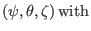
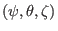
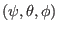
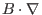
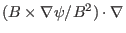

Next:
Definition of the general
Up:
Notes on tokamak equilibrium
Previous:
Flux Surface Functions
Magnetic surface coordinates

general toroidal angle
Subsections
Definition of the general toroidal angle
Contravariant form of magnetic field in

coordinates
Relation between the partial derivatives in

and
coordinates
Steps to construct a straight-line flux coordinate system
Form of operator

in
coordinates
Resonant surface of a perturbation
Poloidal angle used in tearing mode theory
Covariant form of magnetic field in
coordinate system
Form of operator

in
coordinates
Radial differential operator
yj 2018-03-09